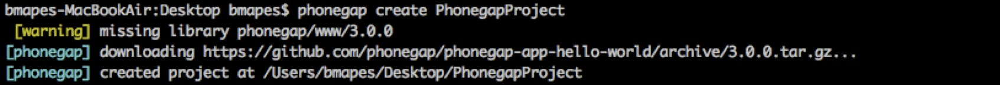
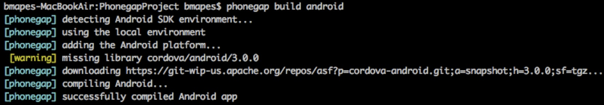
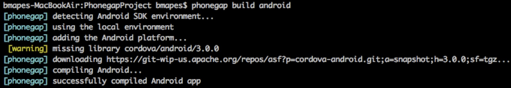
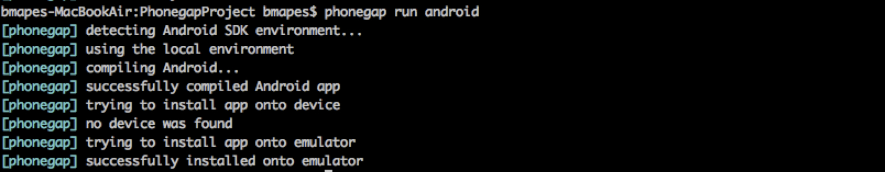
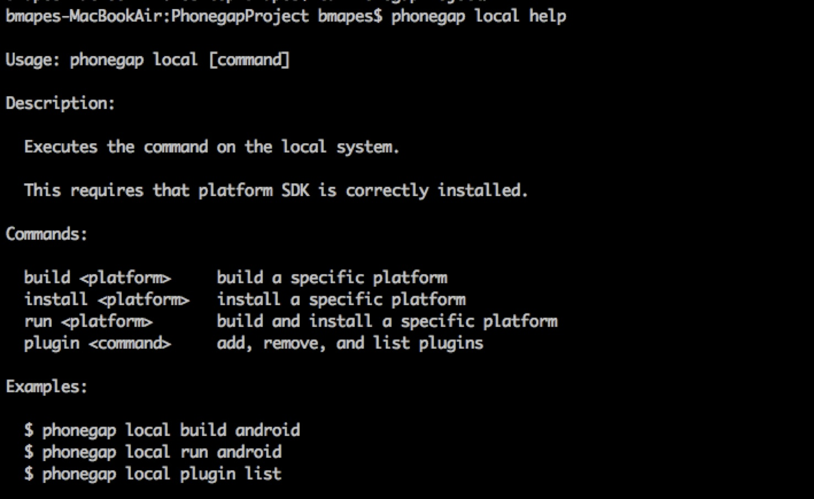
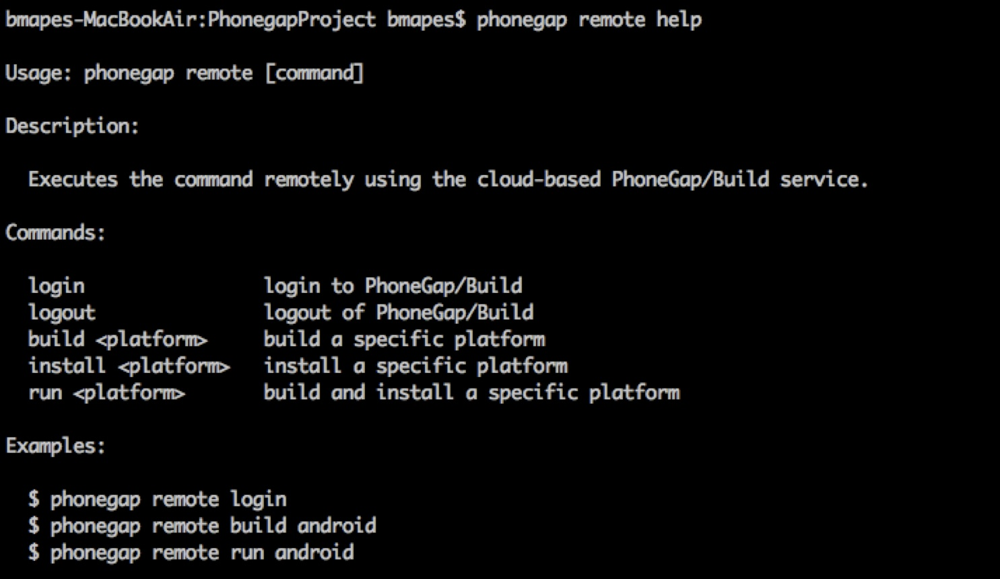
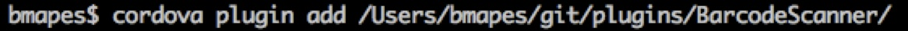

Command Line Interface
Presentation by Benn Mapes / @bennmapes
Why the CLI?
Because it's easy,
How easy?
Thanks @chews
The Hard Part
There are a few drawbacks to this simplified interface :
- Getting away from the stardard platform IDE's (this could also be a plus!)
- Debugging can be hard but there tools to help (ripple emulator).
- Cutomization of resources (icons, splashscreens etc), we're working on this.
- Using the config.xml to describe platform specific settings can be complicated.
The more we use the cli the better it will get.
phonegap
corodva
Log any issues you find on Jira if they arn't already there
https://issues.apache.org/jira/browse/CBToken Beer Slide
The Easy Part
Using the CLI we can build and run applications with just a few lines in the terminal.
Create
phonegap
corodva
Build
phonegap
 

corodva
Run
phonegap
corodva
corodova-cli vs phonegap-cli
phonegap-cli :
- require('cordova-cli')
- require('phonegap-build-cli')
Local
Remote
Plugins
Easy right?
THE END
Questions?
By Benn Mapes